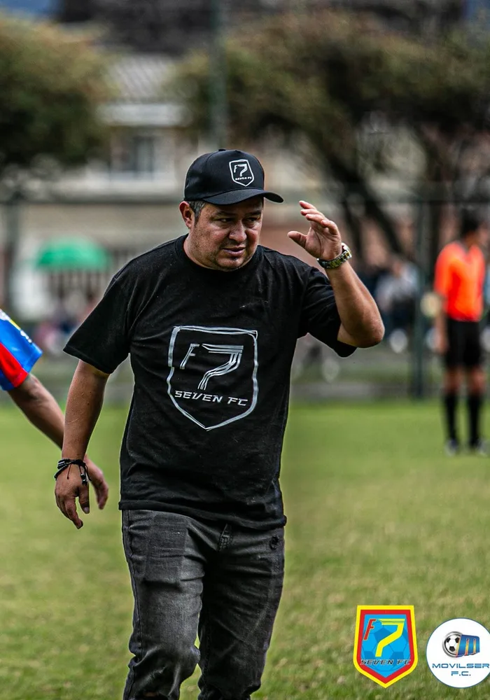

Presidente · Seven ColombiaJhon Cárdenas
Licenciado en Deportes de la Universidad Pedagógica Nacional y exjugador profesional de Independiente Santa Fe. Desde 2010 lidera procesos de formación de jóvenes talentos, con reconocimiento nacional e internacional. Preside la Junta Directiva de la Fundación.